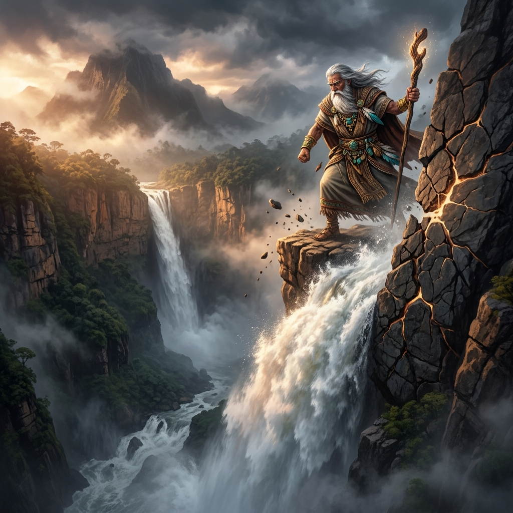
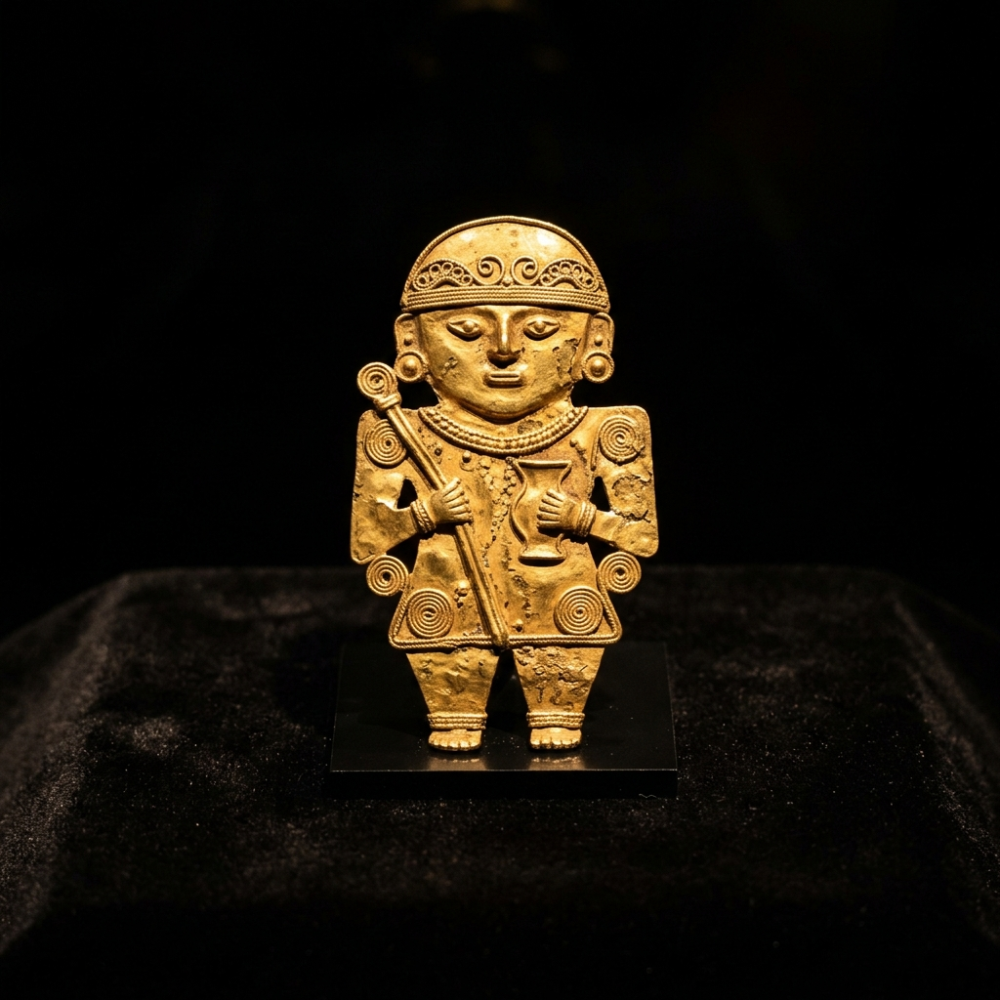

Los Muiscas
Una inmersión profunda en la Confederación Chibcha: su organización social en los valles andinos, su idioma, sus deidades cósmicas y sus gobernantes históricos.
Territorio, Minería y Economía
La Confederación Muisca ocupó las tierras altas del Altiplano Cundiboyacense (valles templados y fríos de Cundinamarca, Boyacá y el sur de Santander). Estaba dividida principalmente en dos grandes unidades políticas que rivalizaban entre sí, además de dos cacicazgos sagrados independientes:
El Zipazgo de Bacatá
Gobernado por el **Zipa**, controlaba cerca del 70% del territorio de la Confederación. Dominaba las valiosas minas de sal de Zipaquirá y Nemocón, y controlaba las ricas vegas agrícolas de la sabana de Bogotá.
El Zacazgo de Hunza
Gobernado por el **Zaque**, tenía un gran peso religioso y controlaba el área de Boyacá, caracterizada por la minería de esmeraldas de Somondoco y el comercio con los llanos orientales.
El Cacicazgo de Iraca
Gobernado por el **Sugamuxi** (Sumo Sacerdote), albergaba el Templo del Sol y era el epicentro espiritual y destino de peregrinaciones pacíficas de toda la confederación.
Comercio, Sal y Esmeraldas
Los Muiscas fueron conocidos como los "hombres de la sal" debido a la explotación a gran escala de las fuentes salinas de **Zipaquirá, Nemocón y Tausa**. Cocinaban la salmuera en vasijas de barro hasta obtener panes de sal sólidas. Estos panes se convirtieron en la principal divisa de intercambio del norte de los Andes, trocándose por algodón de las tierras bajas, oro del río Cauca y plumas exóticas de la Amazonía.
Los Guerreros Guechas
La defensa del territorio estaba encomendada a los **Guechas**, guerreros de élite seleccionados por su fuerza física, valentía y disciplina. No formaban un ejército permanente, sino una guardia fronteriza para contener los asaltos de tribus guerreras como los Panches y los Muzos en las laderas del altiplano.
Diccionario Completo Muysccubun
Usa el buscador para filtrar términos o expresiones de la lengua de la Confederación Muisca.
La Creación y los Dioses Muiscas
La cosmogonía Muisca concebía un universo originado en el pensamiento y la luz, con deidades tutelares asociadas a las fuerzas naturales.
Bochica y el Salto del Tequendama
Bochica era el dios civilizador, un anciano con túnicas y báculo que enseñó a hilar el algodón, a tejer mantas y las normas morales.
Según el mito, la diosa de la luna (Chía), resentida con los hombres, inundó la sabana de Bogotá desbordando los ríos Sopó y Tibitó. Ante la desesperación del pueblo, Bochica arrojó su báculo dorado (Chib) contra las inmensas rocas de los Andes orientales, abriendo paso a las aguas y creando el espectacular **Salto del Tequendama** para drenar la sabana.

Chiminigagua
La deidad suprema. Al principio del universo solo había oscuridad. Chiminigagua comenzó a brillar y arrojó del cielo grandes aves negras que soplaron aire luminoso por sus picos, llenando el cosmos de luz y permitiendo la creación de la vida.
Bachué
Diosa que emergió de la gélida laguna de Iguaque (Boyacá) sosteniendo en sus brazos a un niño de tres años. Cuando el niño creció, poblaron el altiplano. Tras enseñar agricultura y paz, Bachué y su compañero regresaron a la laguna, convirtiéndose en serpientes sagradas.
Nuevos Mitos: Chibchacum e Huitaca
El Castigo de Chibchacum
Chibchacum era el protector de los mercaderes y labradores, pero fue quien conspiró junto a Chía para inundar la sabana de Bogotá. En represalia, Bochica lo castigó a cargar la Tierra entera sobre sus hombros. Cuando Chibchacum se cansa y cambia el peso de un hombro al otro, se producen los violentos terremotos en el altiplano.
La Rebelión de Huitaca
Huitaca era una diosa de gran belleza que enseñó a los Muiscas a rebelarse contra las severas leyes morales y el orden de Bochica, incitándolos a la embriaguez con chicha de maíz y a los placeres carnales. Como castigo, Bochica la derrotó y la convirtió en lechuza, animal asociado a la noche y el misterio.
Gobernantes e Historia
Los gobernantes Muiscas mantuvieron el orden político y redactaron leyes tradicionales para regir la Confederación.
Nemequene
Famoso estratega militar y legislador que consolidó la supremacía del Zipazgo sobre los cacicazgos locales, imponiendo castigos severos para asegurar la obediencia.
Tisquesusa
Líder militar que enfrentó la invasión de Gonzalo Jiménez de Quesada en 1537. Siguiendo los augurios de sus sacerdotes, libró combates asimétricos y tácticos contra los españoles antes de morir en las colinas de Facatativá.
Aquiminzaque
Inicialmente cooperó con los conquistadores, pero tras rebelarse por la imposición y abusos, fue apresado y ejecutado públicamente en Tunja por orden de Hernán Pérez de Quesada, extinguiéndose la dinastía sagrada del Zacazgo.
El Código de Nemequene
Nemequene dictó el código penal y civil más antiguo registrado del territorio colombiano, enfocado en corregir los delitos sociales graves de forma inflexible:
Ley contra el Homicidio
Si un muysca comete homicidio, morirá de la misma forma en que mató a su víctima. Si el asesino es de la nobleza, su castigo será la expropiación de bienes y el destierro absoluto.
Ley contra el Hurto
El ladrón sufrirá la amputación de la mano o será azotado públicamente. Si el hurto es reincidente, el criminal será condenado a la servidumbre o arrojado a las minas.
Ley de Cobardía para los Guechas
Cualquier guerrero Guecha que muestre miedo o huya del campo de batalla contra los enemigos tradicionales (como los Panches) será despojado de sus armas, obligado a vestir mantas de mujer y a realizar labores domésticas.
Tesoros de la Orfebrería Muisca
La orfebrería Muisca es única en América debido al uso de figuras votivas (ofrendas) no destinadas a ser vestidas, sino a ser depositadas en santuarios subterráneos o lagos sagrados.
El Tunjo de Oro
Un **Tunjo** es una figura antropomorfa plana, vaciada en una sola pieza de oro o tumbaga, caracterizada por hilos metálicos soldados al cuerpo que delimitan los ojos, la boca y la vestimenta.
No tenían funciones utilitarias ni de adorno personal: eran puentes espirituales entre el oferente y las deidades, guardados en vasijas de barro llamadas *ofrendatarios*.

Pieza Real: Tunjo Muisca, Museo del Oro, Bogotá.